Yuzuru
Contributor: Phạm Việt Trung
1. Tổng quan (Overview)
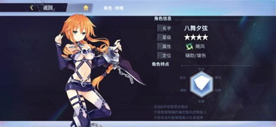
Nhân vật: 4 sao
Hệ nguyên tố: Phong (Bão – Storm)
Vai trò: Support/Dps phụ trợ
Mô tả chung: Yuzuru (Yuz) là nhân vật với sát thương cả tầm xa lẫn cận chiến, sử dụng các cơn lốc để khống chế kẻ địch. Yuz mang lại khả năng xuyên giáp, bỏ qua phòng ngự mục tiêu cho đồng đội.
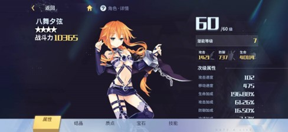
2. Nội tại (Passive)
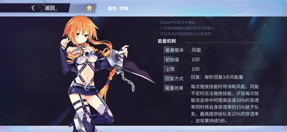
Khởi đầu: 100 điểm
Giới hạn: 100 điểm
Hồi phục: Hồi 3 điểm năng lượng (mana) gió mỗi giây
Hiệu ứng: Mỗi khi thi triển kĩ năng, năng lượng gió sẽ bị tiêu hao và không thể thi triển kĩ năng nếu không đủ mana. Yuz tăng 10% tỉ lệ xuyên giáp (pen rate) của bản thân mỗi khi đòn đánh kĩ năng trúng địch, đồng thời cho đồng đội tối đa 15% pen rate, kéo dài trong 5 giây.
3. Cấp độ (Level)
* Cấp độ(lv) tối đa hiện tại của nhân vật có thể đạt được là 60lv, bằng với cấp độ chung của tài khoản.* Tăng cấp độ giúp bạn tăng các chỉ số cơ bản cho Yuzuru.
4. Tiềm năng (Potential)
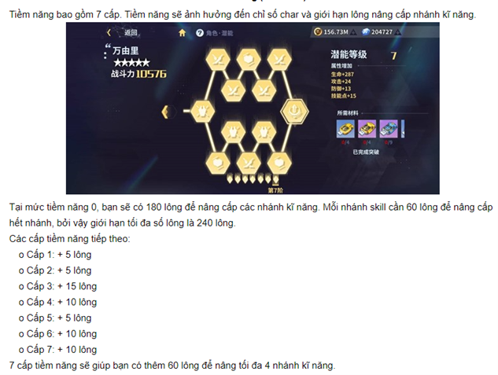
Nâng cấp kĩ năng ngoài tăng số lượng lông để cộng các nhánh kĩ năng, cũng giúp tăng các chỉ số cơ bản của nhân vật.
5.Thông tin kĩ năng
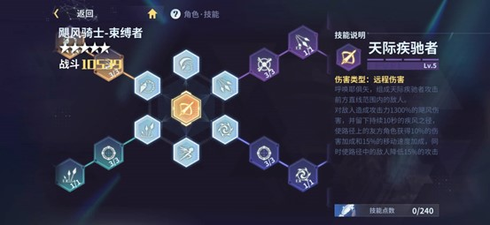
Tấn công thường kẻ địch phía trước bằng ba đòn tấn công liên tiếp, mỗi đòn gây sát thương nguyên tố Phong tỉ lệ với sức mạnh tấn công (chỉ số tấn công cơ bản- SMCK), tăng dần theo mỗi đòn: 40-45-50%.
o Ex1: Tối đa 4 đòn tấn công liên tiếp, gây tổng 185% (SMCK) phong sát thương
o Ex2: Tối đa 5 đòn tấn công liên tiếp, gây tổng 235% (SMCK) phong sát thương
o Ex3: Sau khi thực hiện đòn cuối trong chuỗi, Yuz tạo ra một cơn lốc gây 60% (SMCK) phong sát thương lên các mục tiêu xung quanh.
Skill 1: Chain combo - cost: 25 mana (tối đa 2 stack để sử dụng liên tục- CD:?)
Triệu hồi các dây xích liên tục đâm từ dưới đất lên, tấn công kẻ địch trên mặt đất phía trước, gây 220% (SMCK) phong sát thương
o Ex1: Phạm vi tấn công tăng 20%, sát thương cộng dồn lên mục tiêu tăng đến 320% SMCK.
o Ex2: Kết thúc hiệu ứng đâm lên của dây xích, 1 loạt sợi dây xích trên không được triêu hồi tại vị trí gây 420% SMCK
o Ex3: Những sợi xích được triệu hồi phát nổ gây 580% SMCK
Skill 2: Deadly Vortex – cost:25 mana (CD: 18s ngay khi thi triển kĩ năng)
Triệu hồi 1 luồng gió xoay ở phía trước để kéo các kẻ địch xung quanh, gây 224% (SMCK), giảm 30% tốc độ di chuyển trong 0.5s của kẻ địch ở phạm vi ảnh hưởng.
o Ex1: Vòng xoáy không chỉ ở phía trước mà còn di chuyển đến vùng lân cận của mục tiêu rồi đình trệ, gây 350% SMCK
o Ex2: Một lôi cầu được tạo ra ở trung tâm cơn lốc. Mục tiêu trúng lôi cầu sẽ bị choáng 1 giây. Sau khi lôi cầu đánh trúng mục tiêu sẽ biến mất gây 490% SMCK.
o Ex3: Phạm vi tấn công tăng 20%, gây tối đa 610% SCMK.
! Lưu ý: Trong nhánh kĩ năng 2 có 1 ô khi cộng điểm giúp trừ 10% phòng ngự mục tiêu trong 3 giây.
Skill 3: Spiral Storm – cost:32 mana (CD: 13s sau khi thi triển hết kĩ năng)
Yuz xoay vòng liên tục bản thân và các sợi xích (chiêu E Garen) trong 1s, gây 280% SCMK.
o Ex1: Thi triển kĩ năng có thể đi xuyên mục tiêu, tăng thời gian quay vòng lên 3s, đồng thời gây 525% SMCK.
o Ex2: Phạm vi tấn công tăng 20%, thời gian quay vòng tăng lên 5s, gây 875% SMCK.
o Ex3: Sử dụng kĩ năng tạo ra một hiệu ứng kéo mạnh, nhanh chóng kéo kẻ địch bị trúng đòn sang 2 bên.
Ultimate: Skyrunner
Yuz kết hợp với Kaguya để tấn công kẻ thù theo đường thẳng trước mặt, gây 1300% SMCK, đồng thời để lại một luồng gió trong 10s. Đồng minh đứng trên luồng gió nhận thêm 10% sát thương, 15% tốc độ di chuyển. Kẻ địch đứng trên luồng gió bị giảm 15% SMCK.
c. Thứ tự combo kĩ năng theo gợi ý
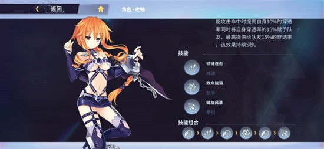
6. Bộ vết thánh (Sephira): Binder 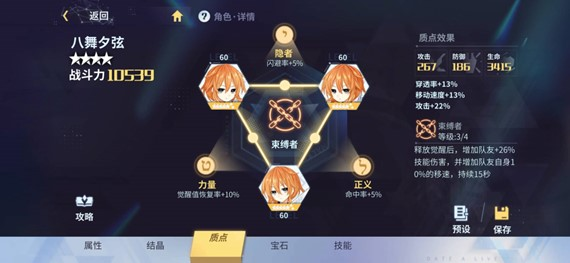
Hiệu ứng riêng từng mảnh:o Pen rate +13%
o Atk + 22%
o Movement speed +13%
b. Hiệu ứng khi trang bị đủ bộ:
Sau khi sử dụng Ultimate, tăng 18/22/26/30% sát thương kĩ năng và 10% tốc độ di chuyển của đồng đội trong 15 giây. Hiệu ứng tăng sát thương được tăng lên dựa theo mức thăng cấp của cả bộ seph (tối đa 30% khi full bộ 3 mảnh 6 sao).
Đồng thời, 3 mảnh sephira sẽ giúp tạo 3 đường liên kết kabbalah, giúp đem lại 3 chỉ số cộng thêm.
o Hit rate + 5%
o Né tránh + 5%
o Tỉ lệ sạc ultimate + 10%
7. Thiên sứ (Raphael: Cuồng phong kị sĩ)
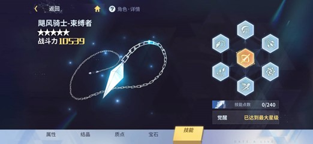
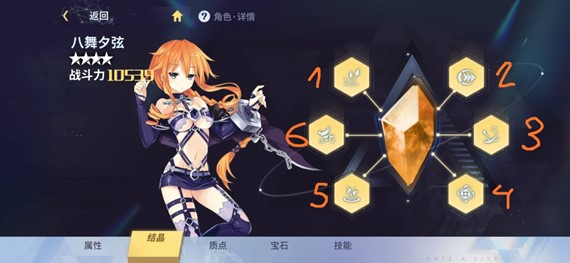
• Ô thiên sứ thứ nhất: Số lần Chain combo có thể được sử dụng tăng thêm 1.• Ô thiên sứ thứ hai: Thêm một hiệu ứng trên vệt gió để lại của Ultimate. Khi hướng của nhân vật trên sân trùng với hướng của vệt gió, nhận thêm 20% sát thương xuyên giáp (Pen dmg). Khi ngược hướng vệt gió, nhận thêm 10% phòng ngự (def).
• Ô thiên sứ thứ ba: Sau khi sử dụng né tránh (flash), tỉ lệ né tránh tăng 20% trong 4s, hồi chiêu 8s.
• Ô thiên sứ thứ tư: Khi năng lượng gió (mana) thấp hơn 50, nhận thêm 1 mana mỗi giây trong 10s, Thời gian hồi của hiệu ứng này là 20s
• Ô thiên sứ thứ năm: 3 kĩ năng của Yuz + Ultimate (ko tính đánh thường) gây thêm 15% sát thương lên các mục tiêu bị làm chậm. .
• Ô thứ sáu: Ultimate +20% sát thương. Mỗi khi đồng đội sử dụng kĩ năng, Yuz được hồi 10 điểm sạc Ultimate.
8. Tương tác với các hệ nguyên tố
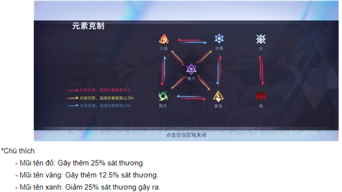
*Lưu ý: Yuz gây thêm sát thương lên hệ Lôi, hệ Phép. Gây ít sát thương hơn lên hệ Hoả.
Yuz nhận thêm sát thương từ hệ Hoả, hệ Phép. Nhận ít sát thương hơn từ hệ Lôi.
Các hệ còn lại sát thương gây ra cũng như sát thương gánh chịu không thay đổi so với thông thường.
9. Đá quý (Gem stone)
+ Theo hướng hỗ trợ gây sát thương:+ Theo hướng hỗ trợ debuff giảm giáp, phòng thủ:
*Ngoài ra có thể sử dụng rune Aquarius khi bạn đã sở hữu Yuz Crystal 6.
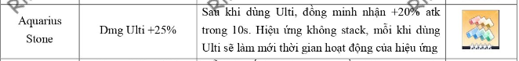
Các chỉ số (dòng, hạt) chính phụ khi xây dựng ở bộ đá: Tuỳ theo nhu cầu, nếu sử dụng yuz hỗ trợ gây debuff nên ưu tiên các chỉ số như phòng thủ, máu. Nếu nhu cầu dùng yuz gây sát thương thì ưu tiên các chỉ số như atk, pen rate, pen dmg…
10. Đánh giá
Yuz là 1 hỗ trợ tốt với khả năng giảm giáp mục tiêu, tăng sát thương của đồng đội trong team. Có thể đảm nhiệm phụ trợ sát thương hệ Phong nếu cần thiết.Lối chơi: sừ dụng skill 1+2 lên mục tiêu để hỗ trợ đồng đội, đồng thời tích cực sử dụng ultimate khi có thể.
Lưu ý: Nếu chưa hoặc không đủ bộ Seph Yuzuru, có thể cân nhắc sử dụng bộ seph Maou với bộ 3 mảnh bất kỳ tạo 3 liên kết Kabbalah.
~ Contributor: Phạm
Việt Trung ~